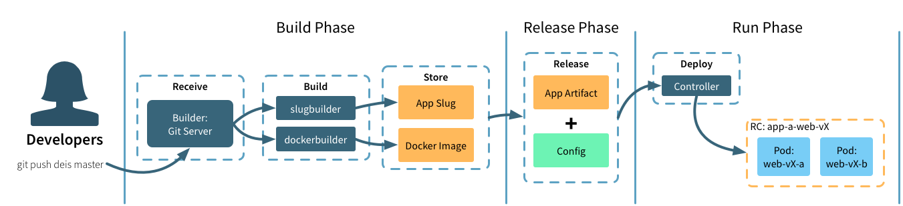

-

Workflow
The Kubernetes platform.
-

Helm
The Package manager.
-

Service Catalog
The Open Service Broker.
- a collection of source files stored in a
gitrepository - a Dockerfile and associated source files stored in a
gitrepository - a reference to an existing image at a Docker repository
Concepts¶
Drycc Workflow is a lightweight application platform that deploys and scales Twelve-Factor apps as containers across a Kubernetes cluster.
Twelve-Factor Applications¶
The Twelve-Factor App is a methodology for building modern applications that can be scaled across a distributed system.
Twelve-factor is a valuable synthesis of years of experience with software-as-a-service apps in the wild, particularly on the Heroku platform.
Workflow is designed to run applications that adhere to the Twelve-Factor App methodology and best practices.
Kubernetes¶
Kubernetes is an open-source cluster manager developed by Google and donated to the Cloud Native Compute Foundation. Kubernetes manages all the activity on your cluster, including: desired state convergence, stable service addresses, health monitoring, service discovery, and DNS resolution.
Workflow builds upon Kubernetes abstractions like Services, Deployments and Pods to provide a developer-friendly experience. Building containers directly from application source code, aggregating logs, and managing deployment configurations and app releases are just some of the features Workflow adds.
Drycc Workflow is a set of Kubernetes-native components, installable via Helm. Systems engineers who are familiar with Kubernetes will feel right at home running Workflow.
See the components overview for more detail.
Docker¶
Docker is an open source project to build, ship and run any application as a lightweight, portable, self-sufficient container.
If you have not yet converted your application to containers, Workflow provides
a simple and straightforward "source to Docker image" capability. Supporting
multiple language runtimes via community buildpacks, building your application
in a container can be as easy as git push drycc master.
Applications which are packaged via a buildpack are run in Docker containers as
part of the slugrunner process. View the slugrunner component
for more information.
Applications which use either a Dockerfile or reference external Docker images are launched unmodified.
Applications¶
Workflow is designed around the concept of an application, or app.
Applications come in one of three forms:
Applications are identified by a unique name for easy reference. If you do not specify a name when creating your application, Workflow generates one for you. Workflow also manages related information, including domain names, SSL certificates, and developer-provided configuration.
Build, Release, Run¶

Build Stage¶
The builder component processes incoming git push drycc master requests
and manages your application packaging.
If your application is using a buildpack, builder will launch an ephemeral job to extract and execute the packaging instructions. The resulting application artifact is stored by the platform for execution during the run stage.
If instead builder finds a Dockerfile, it follows those instructions to create a Docker image. The resulting artifact is stored in a Drycc-managed registry which will be referenced during the run stage.
If another system already builds and packages your application, that container artifact can be used directly. When referencing an external Docker image, the builder component doesn't attempt to repackage your app.
Release Stage¶
During the release stage, a build is combined with application configuration to create a new, numbered release. New releases are created any time a new build is created or application configuration is changed. Tracking releases as a "write-only ledger" this way makes it easy to rollback to any previous release.
Run Stage¶
The run stage deploys the new release to the underlying Kubernetes cluster by changing the Deployment object which references the new release. By managing the desired replica count, Workflow orchestrates a zero-downtime, rolling update of your application. Once successfully updated, Workflow removes the last reference to the old release. Note that during the deploy, your application will be running in a mixed mode.
Backing Services¶
Workflow treats all persistent services such as databases, caches, storage, messaging systems, and other backing services as resources managed separately from your application. This philosophy aligns with Twelve-Factor best practices.
Applications attach to backing services using environment variables. Because apps are decoupled from backing services, they are free to scale up independently, to use services provided by other apps, or to switch to external or third-party vendor services.